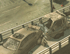

ETERNALCITY3 VIEW
ETERNALCITY3 BLOG

추후 오픈 예정

![10년간의 전쟁, 그리고 혼돈.
2002년. 그 누구도 상상하지 못했던 변이 바이러스의 발생은 전 인류를 혼란과 절망에 빠트렸고,
뒤이어 벌어진 10년간의 전쟁은 인류가 가지고 있던 남은 모든 것을 빼앗아갔다.
기나긴 전쟁 끝에 EL.A는 최후의 승자의 자리에 섰지만, 그 끝에 남은 것은 폐허의 잔재와 남겨진 자들의 분노뿐이었다.
지역과 인종, 종교와 이념을 근간으로 수천 년간 지속해온 국가의 존재는 인류가 맞닥뜨린 단순한 생존의 문제 앞에서 너무나 무의미했다.
국가의 경계는 붕괴되었고, 그 자리에는 극단적인 폐쇄성으로 무장한 공동체들이 자리 잡기 시작했다.
하나 둘 생겨나기 시작한 작은 공동체들은 주변의 다른 공동체들과 영역 다툼을 벌이며
어느덧 난민 촌 혹은 독립국 혹은 그 무엇이어도 상관없을 이름의 집단으로 성장해갔다.
그들은 스스로를 무장시켰고 생존을 위해 격렬히 저항했다.
누구와도 교류하지 않았고, 어떠한 협상도 존재하지 않았다.
그들의 존재 이유는 오로지 생존, 생존을 위한 행동 그것뿐이었다.
EL.A는 과거의 흔적을 가진 마지막 집단이었다. 그리고 그들은 인류의 새로운 생존 방식에 동의하지 않았다.
서로에게 베타적인 소규모 집단들이 새로운 방식의 공동체로서 고착화하는 것을 경계했으며,
그것이 인류를 영원히 분열시키지 않을까 우려하고 있었다.
EL.A는 인류가 다시금 번영을 되찾고, 문명을 재건하기 위해서는 모두가 하나가 되어야 한다고 생각했다.
그리고 지금이야말로 장구한 인류의 역사에서 단 한 번도 이루지 못했던,
지역과 인종과 이념을 뛰어넘을 초 문명을 탄생시킬 절호의 기회라고 판단하고 있었다.
다행히 그들은 통제 가능한 국제적인 조직을 갖추고 있었으며, 절대적인 무력 또한 갖고 있었다
2010년 EL.A는 연방제를 선포했다.
‘자치지구’라는 단어가 처음 생겨난 것이 바로 이때였다.
그리고 2014년. '서울자치지구' 에서 이 모든 것이 다시 시작된다.](img/text.png)